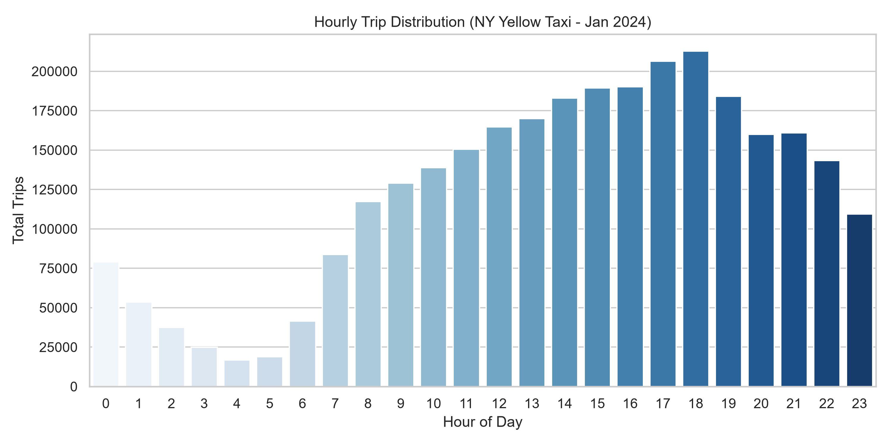
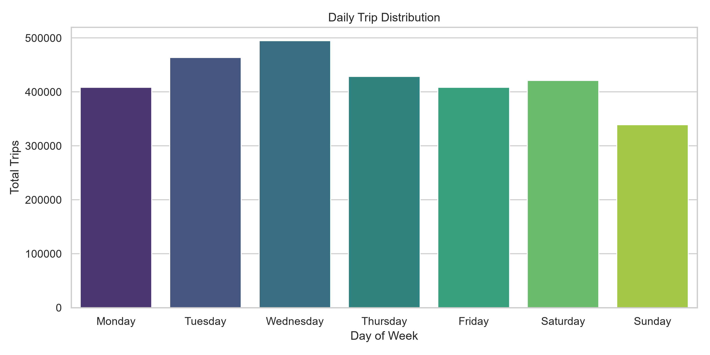
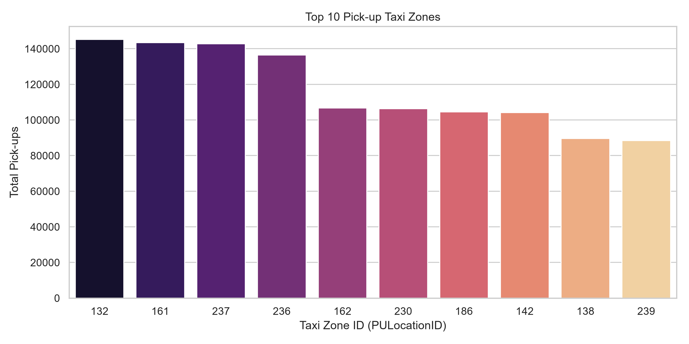
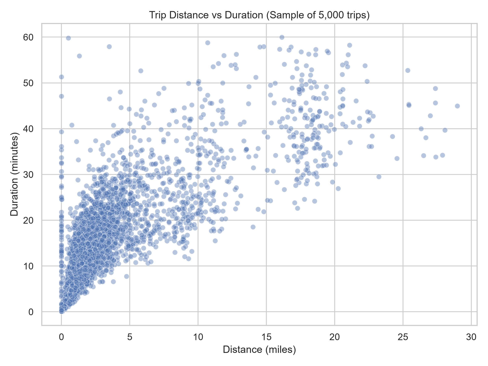

هدف اصلی این پروژه، پیشبینی و تحلیل تقاضای ساعتی سفرهای ناوگان تاکسی زرد شهر نیویورک در مناطق مختلف (Taxi Zones) است. خروجی این تحلیل به سیستمهای مدیریت ناوگان کمک میکند تا تخصیص خودروها در سطح شهر را بر اساس تقاضای متغیر زمانی و مکانی بهینهسازی کنند.
تحلیل بر روی دادههای رسمی تاکسی زرد نیویورک (مربوط به ژانویه ۲۰۲۴) انجام شد. نتایج ممیزی اولیه به شرح زیر است:
| شاخص ممیزی | مقدار / تعداد | توضیحات و تصمیم تحلیلی |
|---|---|---|
| تعداد کل رکوردها (سفرها) | ۲,۹۶۴,۶۲۴ | حجم کل مشاهدات بارگذاری شده از فایل parquet |
| تعداد ویژگیها (ستونها) | ۱۹ | شامل زمان، مسافت، کرایه، شناسه مکانها و... |
| مقادیر گمشده (Missing Values) | ۱۴۰,۱۶۲ رکورد | مشاهده شده در ستونهای passenger_count و RatecodeID |
| کرایههای منفی یا غیرممکن | ۳۷,۴۴۸ رکورد | اشکالات سیستمی یا اصلاح تراکنش (نیاز به پاکسازی در فاز ۲) |
| مسافت صفر با کرایه بالا (>۵۰$) | ۸,۶۸۱ رکورد | سفرهای کنسل شده یا خطای سنجش مسافت GPS |
برای درک عمیقتر رفتار دادهها، بررسیهای تکمتغیره و چندمتغیره روی بعد زمان و مکان صورت گرفت که نتایج آن در قالب نمودارهای زیر استخراج شده است:

تحلیل نمودار ساعتی: همانطور که در شکل ۱ مشاهده میشود، کمترین میزان تقاضا در ساعات اولیه بامداد (بین ساعت ۴ تا ۵) رخ میدهد. با شروع فعالیت روزانه، تقاضا روند صعودی به خود گرفته و در ساعات عصرگاهی و اوایل شب (ساعات ۱۷ الی ۱۹) به نقطه اوج (Peak) خود میرسد که نشاندهنده تاثیر مستقیم ساعات بازگشت از محل کار بر تقاضای ناوگان است.

تحلیل نمودار روزانه: بررسی توزیع سفرها بر حسب روزهای هفته (شکل ۲) حاکی از آن است که روزهای پایانی هفته کاری (بهویژه پنجشنبه و جمعه) بیشترین حجم سفرهای شهری را ثبت کردهاند، در حالی که روزهای یکشنبه و دوشنبه تقاضای نسبتاً آرامتری دارند.

تحلیل ممیزی مکانی: نمودار میلهای ۱۰ منطقه برتر مبدأ (شکل ۳) نشان میدهد که توزیع تقاضای مکانی به شدت نامتوازن است و بخش قابلتوجهی از سفرها از چند هاب اصلی (مانند مناطق مرکزی منهتن و ترمینالهای مسافربری) سرچشمه میگیرند که این موضوع ضرورت مدلسازی مکانی-زمانی را توجیه میکند.

تحلیل سازگاری متغیرها: نمودار پراکندگی مسافت در برابر مدت زمان سفر (شکل ۴) نشاندهنده همبستگی مثبت کلی این دو متغیر است. با این حال، وجود نقاط دورافتاده (Outliers) با مسافت صفر و زمان بالا، اهمیت پاکسازی دقیق دادهها در فاز دوم را دوچندان میکند.
ریسکهای نشت اطلاعات (Data Leakage):
در فاز دوم، ساخت پایپلاین پیشپردازش برای حذف دادههای ناصحیح، مهندسی ویژگیهای چرخهای زمان (Sin/Cos) و خوشهبندی مناطق بر اساس تقاضا انجام خواهد شد.